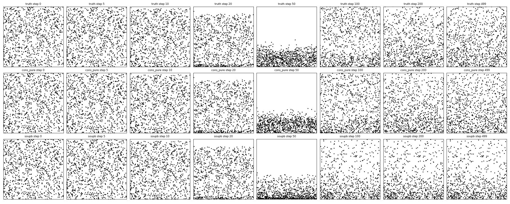

Intermediate progress report: a learned token-per-ball simulator
Adam Webb · Applied project
Project idea
I am building and evaluating a learned simulator for 2D bouncing balls (walls, ball-ball contact, gravity) in which each ball is one state token (position, velocity) and a small network predicts the next state. The question is whether a physics-structured token model beats a generic graph network in accuracy, energy behavior and generalization to far more balls than it was trained on. The pass/kill rule from the proposal is unchanged: the structured model must beat the graph-network (GNS-style) baseline at tick 10 and in energy drift on all held-out seed sets, otherwise I report a negative result.
Current methods and pipeline
Data. A seeded 64-bit GPU force simulator (soft-penalty contact, stiffness 400; walls; gravity 9; ball radius 0.75; time step 0.15; 8 substeps) generates scenes at training time: a single ball, head-on pairs, 20x20 boxes with 2-6 balls, and wider boxes with up to 100 balls and speeds up to 40. There are 1,200 training and 100 validation scenes of 24 steps (seed 4738). Model (“conservative-contact token model”, 8,708 weights, no attention): a distance-only pair-force network (1-64-64-1) applied equal and opposite, which makes pair momentum exact; a wall-force network; a learned uniform gravity; and 8 velocity-Verlet substeps over a cell-list neighbor graph rebuilt each substep, so cost is linear in ball count. Training: unrolled loss on position and velocity over 1, then 4, then 8 steps, 50 epochs, about 39 minutes on one GPU (first run, cons_pure.pt). Evaluation: err@k is the mean position error per ball at tick k, with model and truth started from the same true state; also energy per ball, momentum error, wall restitution versus speed, and first non-finite step. Baselines: an older attention-plus-GRU token model (“soup B”, in place); constant velocity and a GNS-style message-passing network (to add).
Implementation progress
Built and in the repository: the exact simulator and its GPU version; the token model with unit tests (including exact pair momentum); the training and evaluation scripts; 1,000-ball and 50,000-ball rollout scripts with frame renderers; and a JavaScript port of the model with a browser page that runs the model beside the exact simulator, with live-editable weights, per-ball internals, force-curve and energy plots, and a weight-export script.
Frozen for the study: the checkpoint cons_pure_100.pt (trained on at most 100 balls, seed 4738), which is the one the live page serves and the one tested at 50,000 balls. Numbers below were re-read from saved result files; Table 1 and Figure 2 used the earlier checkpoint cons_pure.pt.
Not started yet: the GNS-style baseline, the unified harness with three seed sets and confidence intervals, the one-command pipeline, and the ablations.
Current results and prototype status
The structured model beats soup B on every metric measured so far (table), and in a 1,000-ball, 500-step rollout it never goes non-finite while soup B fails at step 75. Trained on at most 100 balls, it stays finite on 50,000 balls for 100 steps: err@1/5/10/20 = 0.019 / 0.107 / 0.280 / 0.937, kinetic energy per ball 1.7% below truth at tick 100, and the model step (1.16 s) is as fast as the exact one (1.28 s).
Metric
Soup B
Token
err@10, 4 balls
0.67
0.31
err@10, 100 balls
0.49
0.30
Energy/ball @100 (truth −364)
−778
−388
y-wall restitution (truth 1.0)
0.41–1.65
1.00–1.04
First non-finite step
75
none
Table 1. Soup B versus the token model. Rows 1-4: held-out seeds 9000 and 12000, 24 and 6 scenes, true start (energy row: 100 balls); wall speeds 3-80; last row: 1,000 balls, 500 steps. Checkpoint cons_pure.pt (before the 100-ball cap).
Figure 1. The live browser demo: arena, one ball’s unfolded computation, learned force curves, energy plot, editable weights.

Figure 2. 1,000 balls, steps 0 to 499: truth (top), token model cons_pure.pt (middle), soup B (bottom). Soup B panels after step 75 show its last finite frame. A reviewer with no hypothesis primed saw truth and the token model match to about step 20 and both re-expand after the floor impact; soup B stays packed.
Challenges and changes
Chaos limits accuracy claims. Past about tick 20-30 position error saturates (err@50 is about 7 for 4 balls and 45 for 100 balls, for both models), so I judge accuracy over ticks 1-20 and use energy, momentum and restitution beyond that.
Small, single-seed evidence. Table 1 uses few scenes and one training seed; the harness with three seed sets and bootstrap intervals will replace it.
Known model limits: in cons_pure.pt learned gravity is 8.90 versus the true 9, leaving a constant 0.88 pair-momentum offset (the gravity fine-tune ablation targets it); Verlet, 8 substeps and the force scale mirror the truth integrator, a strong prior the substep ablation will quantify.
Change from the proposal: evaluation now starts from the true state, so older grid-start headline numbers are not comparable. The pass/kill rule cannot be scored until the GNS baseline exists.
Next steps before the final submission
GNS-style baseline in PyTorch (encoder, 3 message-passing layers, acceleration decoder, same data and unrolled loss) with tests for shapes, permutation invariance and pair momentum; add the constant-velocity baseline.
One evaluation harness over three held-out seed sets with bootstrap confidence intervals; rerun everything on cons_pure_100.pt; score the pass/kill rule.